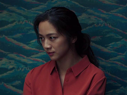
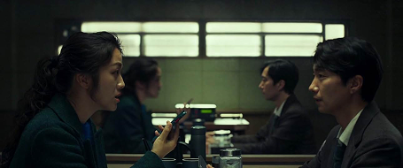
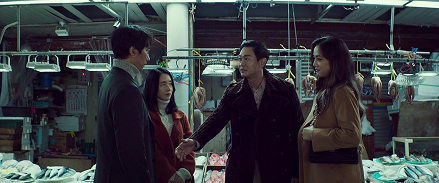
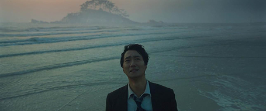

불면증에 시달리는 강력계 형사 장해준(박해일)은 원자력발전소 직원 기도수가 산에서 변사한 사건을 수사하게 된다. 수사 과정에서 기도수의 젊은 중국인 이민자 아내 송서래(탕웨이)가 주요 용의자로 지목되지만, 해준은 서래를 비밀리에 관찰하며 그녀의 침착하고 미스터리한 태도에 점차 매혹된다. 해준은 형사로서의 이성적 판단을 흐리게 되고 결국 사건은 증거 부족으로 종결된다. 서래와 해준은 사원에서 데이트를 하고, 서로의 집을 방문하며 가까워진다. 어느 날, 서래를 대신해 월요일 할머니를 돌보던 해준은 할머니의 휴대폰에서 기도수가 사망한 날 138층의 계단을 올랐다는 기록을 확인하게 되며 서래가 의도적으로 자신에게 접근했다고 비난한다. 13개월 후 전근지인 이포에서 재회한 해준과 서래는 또 다른 변사 사건을 맞닥뜨리고, 이번에도 서래를 용의자로 의심하게 된다.